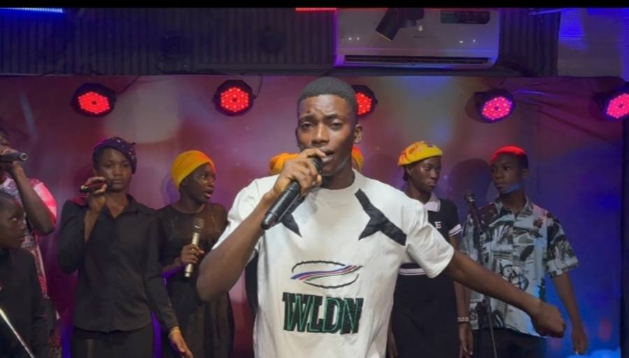
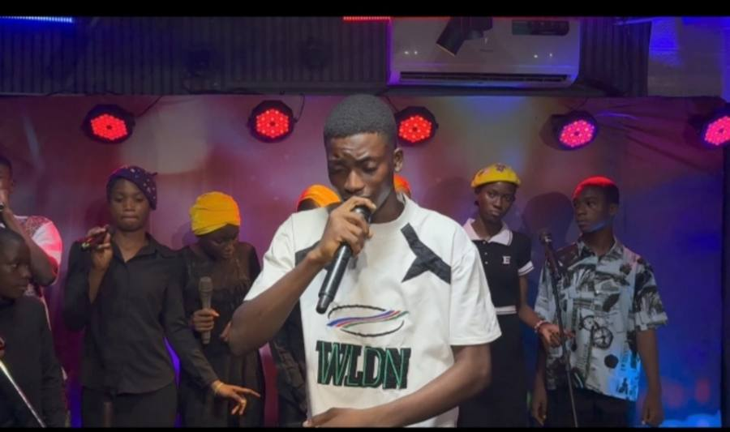
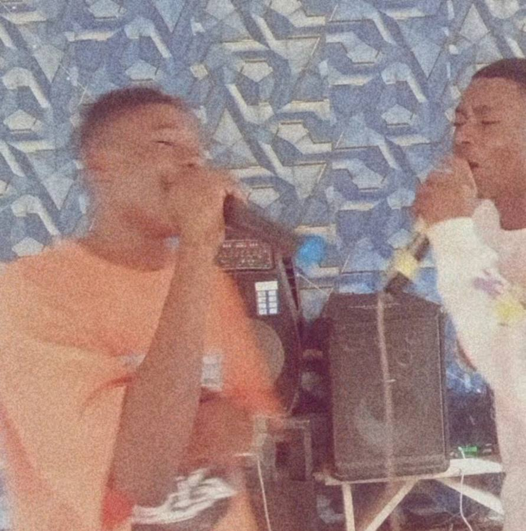
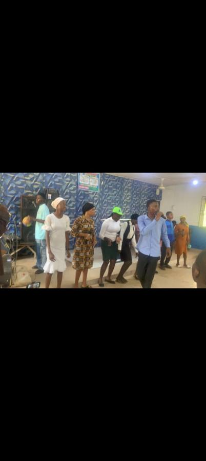

OUR VISION
To become a recognized gospel music ministry that inspires people through music and points hearts toward Jesus Christ.
GOSPEL MUSIC MINISTRY · AKURE, NIGERIA
Ministering Through Music with Excellence and Passion.
A gospel music ministry committed to leading people into joyful praise, heartfelt worship, and Christ-centered musical experiences.

“We believe music is more than sound — it is a ministry, an expression of faith, and a way to point hearts toward God.”
WHO WE ARE
Rejoice Gospel Band is a gospel music ministry focused on using music to glorify God and bless lives.
Our passion is to create powerful moments of praise and sincere worship while maintaining musical excellence and a strong ministry mindset.
From church services and youth programs to gospel concerts, conferences, and special occasions, we are committed to serving with dedication, preparation, and excellence.
OUR VISION
To become a recognized gospel music ministry that inspires people through music and points hearts toward Jesus Christ.
OUR MISSION
To minister through gospel music with excellence, passion, unity, and a heart for God, creating meaningful worship and praise experiences wherever we serve.
THE JOURNEY
The founder of Rejoice Gospel Band is BAYODE REJOICE OLUWAFEMI. Rejoice Gospel Band was officially created on 8th May 2026, but the idea of creating a band began much earlier, while I was still in secondary school. Oluwatayo Samuel, Adewumi Seth, and I (Bayode Rejoice) had already been thinking about creating a band. Samuel was particularly passionate and eager for us to build the band. At first, our idea was mainly focused on having a group of instrumentalists. I did not yet know that God had a bigger plan for us—a plan that would eventually lead to the formation of a full Gospel music band.
The journey that led to the creation of the band began with an invitation received by my church choir, Jesus Family Church, Akure, to minister at a Praise Day organised by The Harmony of Spirit Evangelical Ministry (THOSEM). Unfortunately, our church choir was not available. I decided to represent the church with two other instrumentalists: Adewumi Seth – Gongon player, and David Fidelix – Sekerelist.
When it was time to minister, they were not fully confident about singing and suggested I should go alone. I insisted that the three of us should go together because we had come to represent our church as a team. We eventually ministered together, and the ministration went wonderfully well. People appreciated us, and some were particularly impressed by my singing and collected my phone number. I went home excited and grateful.
After telling my sister, father, and mother and showing them the videos, I realised something important: I could start a Gospel music ministry and build a band. That same night, I decided to take the first step.
That night, I created the band and named it B.R.O Gospel Band. I posted on my WhatsApp status asking, “Who is willing to join my music band?” The first people who became part of the band were Oluwatayo Samuel, Adewumi Seth, Olowokere Olayinka, David Fidelix, Akosile Oyindamola, Olasupo Gift, and Ayomide Erioluwa.
I created a WhatsApp group so members could communicate, get to know one another, discuss the vision, and plan activities. I then selected a date for our first meeting and rehearsal.
The people present at our first rehearsal were Bayode Rejoice – Band Coordinator, Adewumi Seth, Olowokere Olayinka, David Fidelix, Akosile Oyindamola, Olasupo Gift, Ayomide Erioluwa, and Adewumi Zenais.
This was the beginning of our journey as a band. From that point onward, the band continued to grow. More people became interested, more people joined, and more people expressed their willingness to be part of what we were building.
Our first major outing and performance was at the FURAA Youth Conference, held at Jesus Family Church on 24th May 2026. We went there to minister, and we performed excellently. That outing became another important milestone. It gave us more confidence and encouraged us to continue working together.
On 17th July 2026, we entered the studio for our first studio video production. This was a major step because we were moving from simply rehearsing and performing to professionally documenting our music.
After the studio production, I played the song for my father, Pastor (Hon.) M. Adedayo Bayode. He encouraged me and advised me to focus on my education first, obtain my B.Sc. degree, and then pursue music more fully. He also encouraged me to think carefully about the band's name and identity.
After thinking and praying about different names, I eventually decided to rename the band REJOICE GOSPEL BAND. This became the official name of the band.
My mother, Pastor (Mrs.) Mercy O. Bayode, also encouraged me not to allow the band or music ministry to negatively affect my education. Her advice was clear: build the music ministry while also taking education seriously.
Since then, our rehearsals have continued, and the band has continued to grow. People have started inviting us to different programmes and events, including parties and other occasions where they want us to minister through music.
What started as a simple idea among a few secondary school students has gradually developed into something much bigger. Rejoice Gospel Band is more than just a group of musicians. It is a growing Gospel music ministry built on worship, teamwork, learning, service, and the desire to use music to glorify God.
And the journey is still continuing. This is only the beginning.
MINISTRY & ENGAGEMENTS
Rejoice Gospel Band is available for gospel music ministry and musical engagements.
Live gospel music support and ministry for church services, praise programs, worship services, and special church celebrations.
Live gospel music ministry for concerts, praise gatherings, and musical events.
Energetic and Christ-centered music for youth fellowships, conferences, services, and Christian youth events.
Music ministry for Christian conferences, prayer programs, revival meetings, and ministry gatherings.
We also consider bookings for suitable Christian and special occasions, including naming ceremonies, wedding ceremonies, burial ceremonies, and more.
LISTEN & WATCH
Explore gospel praise and worship from Rejoice Gospel Band.
Live performances, worship sessions and praise moments.
MINISTRY MOMENTS
Moments from our ministry, rehearsals, performances, events, and musical gatherings.



READY TO INVITE US?
Looking for a gospel band for your next program or event? We would be glad to hear from you.
GET IN TOUCH